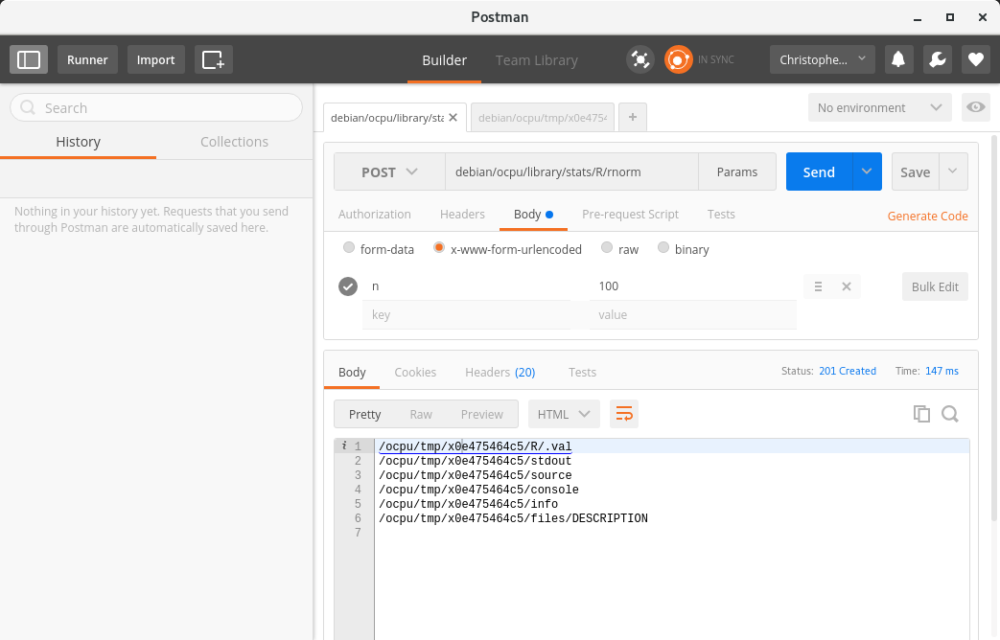
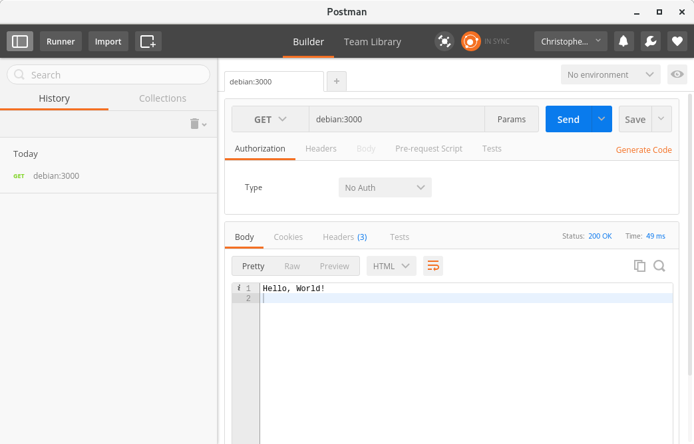
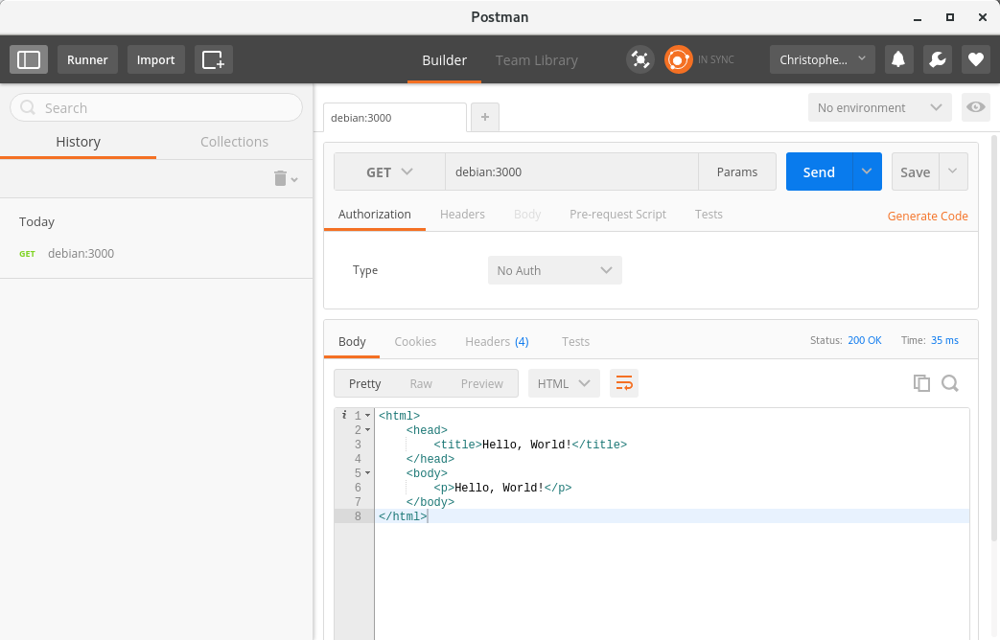
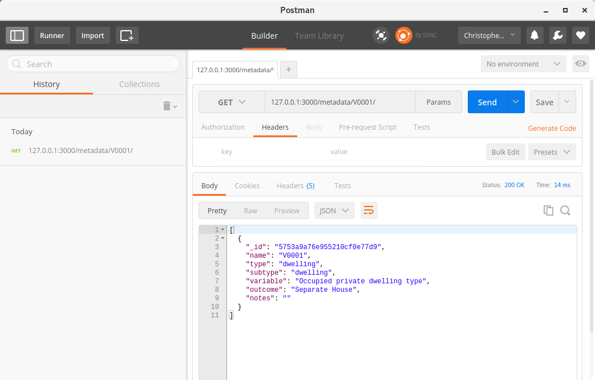
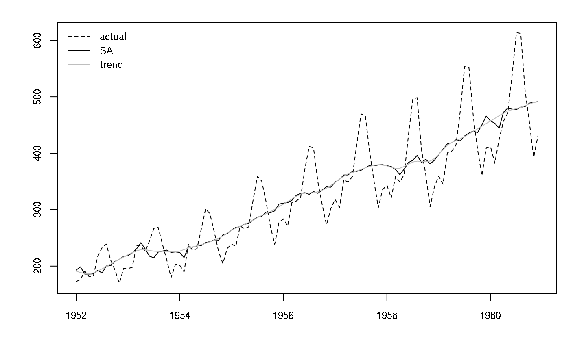

What is node.js?
According to the Node.js website:
Node.js is a JavaScript runtime built on Chrome’s V8 JavaScript engine. Node.js uses an event-driven, non-blocking I/O model that makes it lightweight and efficient.
Node.js’ package ecosystem, npm, is the largest ecosystem of open source libraries in the world.
Event-driven, non-blocking I/O model
Node.js program execution consists of a single-threaded event loop. But all I/O methods in the Node.js standard library have asynchronous versions which accept a callback. This is what is meant by non-blocking I/O. The event loop doesn’t wait for I/O to complete–the callback is executed when the I/O task is finished, but the event loop carries on happily executing other code in the mean time.
Digging around on the web shows some of this is pretty poorly understood. For example, a lot of people fixate on the fact that the event loop is single threaded, and make erroneous assumptions regarding performance. However, Node.js is not single-threaded–just the event loop. As long as the event loop isn’t blocked with CPU intensive tasks or synchronous I/O, then Node.js will generally deliver excellent performance.
Extensible
As mentioned, Node.js is extensible, with functionality added via packages.
There are currently over 280,000 packages available from npm! We can’t
pretend that they’re all of a high quality, of course, but still…
most starred
most dependent
Awesome Node.js
npm-stat
Here are the download counts for May 2016 for a few popular packages:
- async - 29,431,852
- lodash - 28,420,265
- commander - 20,670,541
- request - 14,928,496
- underscore - 11,911,351
- express - 6,321,315
Note that a package might not be a Node.js package per se, but rather a
repackaging of some other popular Javascript library–lodash, for example
But this should only make the use of Node.js an even more attractive proposition
since there are a great number of extremely useful Javascript libraries out
there… why not make use of them if you can?
Actually, it’s fun to look at download counts to get an idea of what’s popular.
For example, mysql provides a MySQL driver, and was downloaded 503,893
times; pg provides bindings for PostgreSQL and was downloaded 389,851
times; and mssql is a client for MS SQL Server and was downloaded 54,824
times.
Among NoSQL options, redis, a Redis client, was downloaded 1,827,226 times;
mongoose, a MongoDB modelling tool, was downloaded 684,530 times; and
cassandra-driver, a driver for Cassandra, was downloaded 28,385 times.
This would imply that NoSQL databases, and key-value stores in particular, are very popular when it comes to building network applications with Node.
Node.js comes bundled with npm, the Node Package Manager, so installing a new
package is straightforward:
npm install [-g] <package>Postman / Testing APIs
Before getting into it, it’s useful to think about how we would go about testing our web services.
In an earlier post on OpenCPU we simply used the curl command line utility.
In this post we’ll instead use a useful Chrome extension called Postman.

Making an HTTP server
Before moving on to some useful practical examples, let us look at a few simple cases.
Simplest possible server
The next listing shows the simplest possible webserver we can come up with (without using third-party modules). It does nothing but listen on port 3000, and sends the string “Hello, World!” in response to every request.
server.js
var http = require("http");
var server = http.createServer(function(request, response){
response.write("Hello, World!");
response.end();
});
server.listen(3000);Since this is the first service we’re running, we note that we start it simply by executing:
node server
It can also be fun to benchmark a service. You can do this with ab, the
ApacheBench tool, or siege. For example, for the simple service above:
cmhh@debian:~$ ab -kc 1000 -n 10000 http://debian:3000/
This is ApacheBench, Version 2.3 <$Revision: 1706008 $>
Copyright 1996 Adam Twiss, Zeus Technology Ltd, http://www.zeustech.net/
Licensed to The Apache Software Foundation, http://www.apache.org/
Benchmarking debian (be patient)
Completed 1000 requests
Completed 2000 requests
Completed 3000 requests
Completed 4000 requests
Completed 5000 requests
Completed 6000 requests
Completed 7000 requests
Completed 8000 requests
Completed 9000 requests
Completed 10000 requests
Finished 10000 requests
Server Software:
Server Hostname: debian
Server Port: 3000
Document Path: /
Document Length: 14 bytes
Concurrency Level: 1000
Time taken for tests: 1.699 seconds
Complete requests: 10000
Failed requests: 0
Keep-Alive requests: 0
Total transferred: 890000 bytes
HTML transferred: 140000 bytes
Requests per second: 5884.73 [#/sec] (mean)
Time per request: 169.931 [ms] (mean)
Time per request: 0.170 [ms] (mean, across all concurrent requests)
Transfer rate: 511.47 [Kbytes/sec] received
Connection Times (ms)
min mean[+/-sd] median max
Connect: 0 89 281.0 0 1040
Processing: 3 35 23.7 29 287
Waiting: 2 33 22.8 28 287
Total: 10 124 286.7 31 1300
Percentage of the requests served within a certain time (ms)
50% 31
66% 48
75% 65
80% 74
90% 110
95% 1065
98% 1078
99% 1095
100% 1300 (longest request)While not the most sophisticated service, we processed the requests at an average of 5884 per second. Seems decent enough…
Serving a file
Now we consider a slightly more complicated example. In this case, we simply
serve the file index.html, a simple HTML landing page. If not found,
we issue 404.
server.js
var http = require('http');
var fs = require('fs');
var server = http.createServer(function(request, response){
if (request.method=="GET" && request.url=="/"){
response.writeHead(200, {'Content-Type': 'text/html'});
fs.createReadStream('./index.html').pipe(response);
}
else{
response.writeHead(404, {'Content-Type': 'text/html'});
response.write("<h1>404</h1><p>Sorry, bro. There's no such resource.</p>");
response.end();
}
})
server.listen(3000);index.html
<pre><code data-trim contenteditable class="html hljs"
><html>
<head>
<title>Hello, World!</title>
</head>
<body>
<p>Hello, World!</p>
</body>
</html>
In this example, more than twice the amount of data is transferred compared to the previous example, and so the throughput falls accordingly:
cmhh@debian:~$ ab -kc 1000 -n 10000 http://debian:3000/
This is ApacheBench, Version 2.3 <$Revision: 1706008 $>
Copyright 1996 Adam Twiss, Zeus Technology Ltd, http://www.zeustech.net/
Licensed to The Apache Software Foundation, http://www.apache.org/
Benchmarking debian (be patient)
Completed 1000 requests
Completed 2000 requests
Completed 3000 requests
Completed 4000 requests
Completed 5000 requests
Completed 6000 requests
Completed 7000 requests
Completed 8000 requests
Completed 9000 requests
Completed 10000 requests
Finished 10000 requests
Server Software:
Server Hostname: debian
Server Port: 3000
Document Path: /
Document Length: 101 bytes
Concurrency Level: 1000
Time taken for tests: 3.835 seconds
Complete requests: 10000
Failed requests: 0
Keep-Alive requests: 0
Total transferred: 2010000 bytes
HTML transferred: 1010000 bytes
Requests per second: 2607.54 [#/sec] (mean)
Time per request: 383.503 [ms] (mean)
Time per request: 0.384 [ms] (mean, across all concurrent requests)
Transfer rate: 511.83 [Kbytes/sec] received
Connection Times (ms)
min mean[+/-sd] median max
Connect: 0 186 579.4 3 3009
Processing: 10 109 72.5 87 422
Waiting: 4 83 60.1 64 406
Total: 35 295 592.8 92 3426
Percentage of the requests served within a certain time (ms)
50% 92
66% 107
75% 143
80% 256
90% 1092
95% 1188
98% 3092
99% 3096
100% 3426 (longest request)We’re now down to a lowly 2607 requests per second!
Serving files
Now we make an even more flexible service–one capable of serving any file.
This time, however, we make use of the module express. Brace yourself…
server.js
var express = require('express');
var app = express();
app.use(express.static(__dirname + '/public')).listen(3000);The service will serve any file found in the public folder, and will return an
error for any file that does not exist.
found
not found
express.static is an example of middleware. You simply pass the middleware
to the use method, and you can chain lots of different middleware together.
You could add more folders, compress content, cache content, and so on. In
fact, let’s add compression to the above example:
server.js
var express = require('express');
var compression = require('compression');
var app = express();
app.use(compression())
.use(express.static(__dirname + '/public'))
.listen(3000);Practical Examples
Let us now ramp things up a little and work through a couple of (somewhat) realistic and practical examples. I thought of two that I thought would be fun:
- provide a set of endpoints to query the Census Meshblock datasets
- provide an endpoint for executing the X13-ARIMA-SEATS program
This presentation consists of my first and only attempt to use node.js, so we’ll aim to keep things simple. In that spirit, arguments will be passed as part of the URI, for example:
/value1/value2/...Moreover, responses, when provided, will generally be plain text or JSON format, but that shouldn’t prove any real issue for consumption. And just as I’m not exactly an expert in Node.js, I’m not an expert in writing fully compliant RESTful services. For the examples here, I’ll assume the following:
GETwill yield a status of 200 on success, and will return content; and 404 on failure, with no content.POSTwill yield a status of 200 or 204 on success–200 if content is returned, and 204 if no content is returned; and 404 on failure, with no content.DELETEwill yield a status of 204 on success, and 404 on failure; no content will be returned in either case.
This may or may not conform to common practice, but that’s hardly the point.
Census Meshblock service
In this example we are just serving data, so we first need to store the data where it can be easily retrieved by Node.js. There are a range of options available, but we choose to put the data in a MongoDB database in this case.
If all we want to do is select meshblock data by meshblock code, then a key-value store like Redis might be sufficient, and would probably offer better performance. However, if we want to extend the example and allow more complicated queries, then MongoDB is a better option.
As noted, the Census ‘meshblock’ data is not in a particularly usable state as
is. So, I’ve imported the data and tidied it up, then put the tidied data in
an R package called NZCensus. This provides datasets such as the following:
datadictionary
dwelling
The full set of datasets is:
dwellinghouseholdfamilyindividualdatadictionary- metadata describing columns in the above datasets
Each dataset (excluding datadictionary) contains data at a number of
geographic levels: MB - meshblock, AU - area unit, Ward - ward,
TA - territorial authority, CMB - community board, and RC - regional
council.
So, let’s aim for the following endpoints for the datadictionary dataset:
/metadata- return the whole dataset/metadata/{column}- return metadata for columncolumn.
For the other datasets, let’s aim for:
/{dataset}/{MB|AU|Ward|TA|CMB|RC}/{code}
For example, /datadictionary/V0001 will return the metadata for the column
named V0001. Similarly, /dwelling/RC/01 will return the ‘row’ of data from
the dwelling dataset corresponding to Northland regional council.
Before making the service, though, we need to load the data into a database.
We use MongoDB to store the data, and there’s a nice package in R called
mongolite which we can use to do the loading. As a simple example:
loadmongodb.R
library(NZCensusLite)
library(mongolite)
m <- mongo(collection="dwelling", db="census")
m$insert(dwelling)
# and so on...As an aside, this is nice and generic and would work for any dataset–not a
schema in sight! This, among other things, can be extrememly useful.
SQL Server is not the answer for absolutely every application that needs
persistent storage, and using something else on occasion doesn’t necessarily
diminish the value of relational database management systems. Something to
think about (for those who haven’t given NoSQL options a look).
Anyway, we can run a few queries to ensure our data is loaded:
cmhh@debian:~$ mongo
MongoDB shell version: 2.4.14
connecting to: test
>
> use census
switched to db census
>
> db.dwelling.find({"geography":"RC", "code":"01", "year":2013},
... {"code":1, "description": 1, "year": 1, "V0001":1})
{
"_id" : ObjectId("5753a9346e955210cf07bd90"),
"code" : "01",
"description" : "Northland Region",
"year" : 2013,
"V0001" : 47820
}
>
> db.metadata.find({$or: [{"name":"V0001"}, {"name":"V0002"}]})
{
"_id" : ObjectId("5753a9a76e955210cf0e77d9"),
"name" : "V0001",
"type" : "dwelling",
"subtype" : "dwelling",
"variable" : "Occupied private dwelling type",
"outcome" : "Separate House",
"notes" : ""
}
{
"_id" : ObjectId("5753a9a76e955210cf0e77da"),
"name" : "V0002",
"type" : "dwelling",
"subtype" : "dwelling",
"variable" : "Occupied private dwelling type",
"outcome" : "Two or More Flats/Units/Townhouses/ Apartments/Houses Joined Together",
"notes" : ""
}Let’s look at a service where we define a single endpoint,
/metadata/column:
server.js
var express = require('express');
var app = express();
var assert = require('assert');
var client = require('mongodb').MongoClient;
var url = 'mongodb://127.0.0.1:27017/census';
var db;
client.connect(url, function(err, database) {
assert.equal(null, err);
db = database;
app.listen(3000);
});
app.get('/metadata/:name', function(request, response){
response.setHeader('Content-Type', 'application/json');
db.collection('metadata').find({"name": request.params.name}, function(err, items){
var a = items.toArray(function(err, results){
response.write(JSON.stringify(results));
response.end();
});
});
});
And, for giggles, let’s benchmark the service:
cmhh@debian:~$ ab -kc 1000 -n 10000 http://debian:3000/V0001
This is ApacheBench, Version 2.3 <$Revision: 1706008 $>
Copyright 1996 Adam Twiss, Zeus Technology Ltd, http://www.zeustech.net/
Licensed to The Apache Software Foundation, http://www.apache.org/
Benchmarking debian (be patient)
Completed 1000 requests
Completed 2000 requests
Completed 3000 requests
Completed 4000 requests
Completed 5000 requests
Completed 6000 requests
Completed 7000 requests
Completed 8000 requests
Completed 9000 requests
Completed 10000 requests
Finished 10000 requests
Server Software:
Server Hostname: debian
Server Port: 3000
Document Path: /V0001
Document Length: 18 bytes
Concurrency Level: 1000
Time taken for tests: 1.823 seconds
Complete requests: 10000
Failed requests: 0
Non-2xx responses: 10000
Keep-Alive requests: 10000
Total transferred: 2210000 bytes
HTML transferred: 180000 bytes
Requests per second: 5485.41 [#/sec] (mean)
Time per request: 182.302 [ms] (mean)
Time per request: 0.182 [ms] (mean, across all concurrent requests)
Transfer rate: 1183.86 [Kbytes/sec] received
Connection Times (ms)
min mean[+/-sd] median max
Connect: 0 19 133.2 0 1006
Processing: 12 57 27.1 53 326
Waiting: 12 57 27.1 53 326
Total: 12 76 148.5 54 1330
Percentage of the requests served within a certain time (ms)
50% 54
66% 64
75% 71
80% 74
90% 84
95% 94
98% 151
99% 1092
100% 1330 (longest request)So, 5485 requests per second. Not too shabby…
Now let’s add the /metadata and /dataset/ endpoints:
server.js
var express = require('express');
var app = express();
var client = require('mongodb').MongoClient;
var url = 'mongodb://127.0.0.1:27017/census';
var db;
client.connect(url, function(err, database) {
if (!err){
db = database;
app.listen(3000);
}
});
app.get('/metadata', function(request, response){
db.collection('metadata').find({}, function(err, items){
if (!err){
var a = items.toArray(function(err, results){
if (!err){
response.setHeader('Content-Type', 'application/json');
response.statusCode = 200;
response.write(JSON.stringify(results));
response.end();
}
else{
response.statusCode = 404;
response.end();
}
});
}
else{
response.statusCode = 404;
response.end();
}
});
});
app.get('/metadata/:name', function(request, response){
db.collection('metadata').find({"name": request.params.name}, function(err, items){
if (!err){
var a = items.toArray(function(err, results){
if (!err){
response.setHeader('Content-Type', 'application/json');
response.statusCode = 200;
response.write(JSON.stringify(results));
response.end();
}
else{
response.statusCode = 404;
response.end();
}
});
}
else {
response.statusCode = 404;
response.end();
}
});
});
app.get('/:dataset/:geography/:code', function(request, response){
var dataset = request.params.dataset;
var geography = request.params.geography;
var code = request.params.code;
var collection = db.collection(dataset);
collection.find({"geography":geography, "code":code}, function(err, items){
if (!err){
var a = items.toArray(function(err, results){
if (!err){
response.setHeader('Content-Type', 'application/json');
response.statusCode = 200;
response.write(JSON.stringify(results));
response.end();
}
else {
response.statusCode = 404;
response.end();
}
});
}
else {
response.statusCode = 404;
response.end();
}
});
});/metadata/
/dwelling/RC/01
X13-ARIMA-SEATS service
This example is somewhat more complicated. But, again, to keep things a little
simple, we will assume that the required input for an adjustment is a single
‘spc’ file containing both the raw data to be adjusted as well as the
adjustment specifications. The spc file will be submitted via a POST
request.
Taking inspiration from OpenCPU, the result will be
a series of endpoints available via a GET request where each corresponds to a
text file generated by the X13 program.
For example, assume we upload foo.spc and conduct an adjustment, and this
yields the remote file foo.d12. Then this file will be available via
/foo/d12.
Attempting to POST an adjustment that has already been run will result in
failure. But using the DELETE method on /foo will remove any trace of the
adjustment from the server.
To install X13-ARIMA-SEATS on Linux:
wget https://www.census.gov/ts/x13as/unix/x13assrc_V1.1_B26.tar.gz
tar -xvf x13assrc_V1.1_B26.tar.gz
make -f makefile.gf
sudo mv x13asv11b26o1 /usr/local/bin/x13asLet us just use the Testairline.spc file that comes bundled with the x13as
program (note that this spc format looks like a prime candidate for
conversion to some other format, such as JSON):
Testairline.spc
series{
title="International Airline Passengers Data from Box and Jenkins"
start=1949.01
data=(
112 118 132 129 121 135 148 148 136 119 104 118
115 126 141 135 125 149 170 170 158 133 114 140
145 150 178 163 172 178 199 199 184 162 146 166
171 180 193 181 183 218 230 242 209 191 172 194
196 196 236 235 229 243 264 272 237 211 180 201
204 188 235 227 234 264 302 293 259 229 203 229
242 233 267 269 270 315 364 347 312 274 237 278
284 277 317 313 318 374 413 405 355 306 271 306
315 301 356 348 355 422 465 467 404 347 305 336
340 318 362 348 363 435 491 505 404 359 310 337
360 342 406 396 420 472 548 559 463 407 362 405
417 391 419 461 472 535 622 606 508 461 390 432)
span=(1952.01, )
}
spectrum{
savelog=peaks
}
transform{
function=auto
savelog=autotransform
}
regression{
aictest=(td easter)
savelog=aictest
}
automdl{
savelog=automodel
}
outlier{ }
x11{
save=(d10 d11 d12)
}Here’s the full service:
server.js
var express = require('express');
var app = express();
var fs = require('fs');
var rimraf = require('rimraf');
var exec = require('child_process').exec;
var busboy = require('connect-busboy');
var path = require('path');
app.use(busboy());
app.post('/adjust', function(request, response){
request.pipe(request.busboy);
request.busboy.on('file', function(fieldname, file, filename){
var fstream;
var basename = path.basename(filename, path.extname(filename));
fs.mkdir(__dirname + '/work/' + basename, function(err){
if (!err){
fstream = fs.createWriteStream(__dirname + "/work/" + basename + '/' + filename);
file.pipe(fstream);
fstream.on('close', function(){
var cmd = 'cd ' + __dirname + '/work/' + basename + ' && x13as ' + basename;
exec(cmd, function(error, stdout, stderr) {
if (!error){
response.statusCode = 200;
fs.readdir(__dirname + '/work/' + basename, function(err, files){
if (!err){
files.forEach(function(file){
var thisext = path.extname(file);
var thisbase = path.basename(file, thisext);
thisext = thisext.split('.').pop();
if (basename==thisbase) response.write('/' + basename + '/' + thisext + '\n');
});
response.end();
}
});
}
else{
response.statusCode = 404;
response.end();
}
});
});
}
else{
response.statusCode = 404;
response.end();
}
});
});
});
app.delete('/:series', function(request, response){
response.statusCcode = 404;
var series = request.params.series;
fs.stat(__dirname + '/work/' + series, function(err, stat){
if (!err){
rimraf(__dirname + '/work/' + series, function(err){
if (!err){
response.statusCode = 204;
response.end();
}
else{
response.statusCode = 404;
response.end();
}
});
}
else{
response.statusCode = 404;
response.end();
}
});
});
app.get('/:series/:output', function(request, response){
var series = request.params.series;
var output = request.params.output;
fs.stat(__dirname + '/work/' + series + '/' + series + '.' + output, function(err, stat){
if (!err){
response.statusCode = 200;
response.setHeader("Content-Type", "text/html");
fs.createReadStream(__dirname + '/work/' + series + '/' + series + '.' + output).pipe(response);
}
else{
response.statusCode = 404;
response.end();
}
});
});
app.listen(3000);/adjust
/<output>/d11
/<output>/out
/<output> - DELETE
And we might as well visualise the results:
getandplot <- function(){
if (!require(magrittr)) stop("Nope.")
d10 <- read.table("http://127.0.0.1:3000/Testairline/d10",
col.names=c("date", "d10"), skip=2)
d11 <- read.table("http://127.0.0.1:3000/Testairline/d11",
col.names=c("date", "d11"), skip=2)
d12 <- read.table("http://127.0.0.1:3000/Testairline/d12",
col.names=c("date", "d12"), skip=2)
ap <- ts((d10 %>% merge(d11) %>% merge(d12))[,-1], start=c(1952,1), frequency=12)
plot(ap[,"d11"] * ap[,"d10"], xlab="", ylab="", lty=2)
lines(ap[,"d11"])
lines(ap[,"d12"], col="grey")
legend("topleft", c("actual", "SA", "trend"),
lty=c(2,1,1), col=c("black", "black", "grey"), box.col=NA)
box()
}getandplot()
Summary
We’ve touched on a few ideas here. Without advocating specifically for Node.js, we see that web services provide some useful use cases:
- they can provide an alternative to ‘traditional’ dissemination methods such as file downloads–particularly useful for those who only need a subset of the dataset at any one time
- they can be used to wrap existing programs, making them cross platform, and standardising input and output requirements.
The latter is particularly interesting, and you can imagine some obvious applications–CSPA, for example. In fact, I got curious and, for fun, Googled ‘Node.js CSPA’, and found the following:
Designing a REST interface for CSPA command line services
There is a PDF included:
Generic REST interface for CSPA services
We repeat the abstract here:
A generic REST interface is proposed which can be used by many of the services in CSPA. Furthermore, it is possible to develop a generic implementation which can be used to wrap the REST interface around an existing service making implementation much more simple. A generic interface used by most of the services would make it easier to implement systems that use the services.
Of course, web services can be written in any number of languages, including C# with ASP.NET, or Scala or Java with the Play framework. But Node.js has a lot going for it. It is easy to use, and there is an astonishing amount of code out there that we can borrow, free of charge.
Finally, the other interesting thing we saw was MongoDB, a document database. MongoDB is a NoSQL database capable of storing massive amounts of data in binary JSON (BSON) format with a dynamic schema. It is fast, flexible, and reliable; and lends itself well to rapid development.
You could argue that using a NoSQL database like MongoDB makes your applications easier to use for 3rd parties–they don’t have to have a specific RDBMS, create users, create databases, create tables with specific schemas, and so on.
There are times when NoSQL databases like Redis or MongoDB are just much easier to use than a traditional RDBMS, and there really isn’t any good reason not to get on board. Horses for courses, and all that. They can be complementary to SQL, and time saved in development could easily offset any increased IT support required (which is a pretty specious assertion anyway).
Share this post
Twitter
Google+
Facebook
Reddit
LinkedIn
StumbleUpon
Email